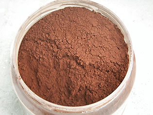

Lecture conseillée :
La
terre de Sienne sur Pourpre.com

Comportement
Les terres de Sienne posent un problème en peinture à l'huile : testées et comparées à d'autres pigments,
les "Sienne" battent
tous les records d'absorption. Il faut
pourtant éviter de les saturer d'huile
lors du liage (réflexe naturel face à un pigment trop absorbant) car cela
risque de poser le problème inverse. La réputation de transparence des terres
de Sienne a peut-être été exagérée pour cette raison : un surplus d'huile
rend la couleur plus transparente alors qu'après quelques tests comparatifs, le
peintre peut se rendre compte du pouvoir couvrant quand même assez puissant de ces
pigments (dépassé cependant par les ocres). De même, la saturation d'huile au
liage pourrait être à la source de la réputation de médiocre siccativité
du pigment. En fait, celui-ci est siccatif pour l'huile,
contenant de l'oxyde de manganèse, mais il est beaucoup plus absorbant que, par
exemple, les terres d'ombre qui en contiennent
également. C'est ce
déséquilibre qui rend sa manipulation relativement malaisée au liage (voir facteur
absorbant et facteur siccativant). Il faut en effet trouver la
"juste quantité" des ingrédients.
Certains fabricants de peinture en tubes y sont parvenus, mais ils ne sont
pas si nombreux que cela. Nous avons pu constater quelques anomalies.
Deux variétés de terres de Sienne sont connues :
* la naturelle (voir
ci-dessus).
Sa beauté la rend suffisamment indispensable pour qu'elle demeure
très présente sur les palettes malgré les problèmes de liage. Elle a quelque chose de
délicieusement raffiné, discret, séduisant. Il est difficile d'y
renoncer, et c'est la raison pour laquelle elle continue à être utilisée
malgré les inconvénients qu'elle implique.
Le peintre souhaitant l'utiliser en peinture à l'huile a intérêt à se
méfier des embus (employer un médium brillant comportant par exemple de la
résine dammar).
Certaines sources déconseillent l'empâtement pour cause de risque de
craquelure. Nous n'avons pas expérimenté le phénomène, mais de toute
manière, étant donné les caractéristiques particulières d'absorption - et le risque de
différentiel qu'elles impliquent - il est certain que le dépôt en relief de
Sienne naturelle ne semble pas forcément indiqué pour tous les cas. L'emploi
en glacis est certainement le plus aisé.
Pour le reste, elle semble avoir une assez bonne tenue dans la durée - à
moyen terme au moins.
Son utilisation pour les carnations n'est vraiment pas malvenue.

* la
variété brûlée (voir
ci-contre). Elle contiendrait 30 à 48% d'oxyde de fer
rouge seulement car elle serait encore plus chargée en dioxyde de manganèse
que la Sienne naturelle.
Elle pose le même problème
d'absorption excessive que la Sienne naturelle.
Elle est plus rouge que l'ocre rouge qui est lestée d'argile.
Certains auteurs souhaitent voire en elle le plus lumineux des bruns. Ils avancent que la terre de Sienne naturelle doit être cuite à
haute température pour obtenir la variété brûlée. Nous nous permettons
de mettre en doute cette affirmation. La Sienne brûlée n'est pas vraiment
brune mais plutôt rouge ou rousse, c'est du moins la
constatation que l'on peut faire en la comparant avec n'importe quel oxyde de
fer brun. Il est très possible qu'une cuisson à haute température ait été
pratiquée dans le passé, donnant effectivement un résultat plus brun.
Nous avons effectué plusieurs tests consistant à calciner de la Sienne naturelle à l'aide d'une simple casserole et d'une
cuisinière. Le résultat obtenu est proche de la Sienne brûlée du commerce quoiqu'un
petit peu plus froid. L'origine du pigment, extrait en tel ou tel point de la
région de Sienne, pourrait faire varier la composition de ce matériau, sa teinte
à l'état naturel et à l'état calciné. Au vu du résultat de l'expérience,
il ne nous paraît en tous cas pas certain qu'une calcination à haute température soit
forcément indispensable. Nous réservons cependant tout diagnostic définitif à des temps
ultérieurs.
Toxicité
Aucune toxicité n'est signalée concernant ces pigments.
La quantité de manganèse n'est pas réputée suffisante pour induire un
quelconque effet nocif. Cependant, il n'est pas à exclure qu'une exposition
répétitive puisse provoquer des réactions biologiques. On s'inspire là de
données concernant les terres d'ombre.
Cliquer ici.
Emplois
Leur utilisation en peinture à l'huile et a
tempera est ancienne.
Leur usage à fresque, à l'intérieur ou à l'extérieur est éprouvé de longue date.
En usage décoratif, la Sienne naturelle peut être employée comme patine pour
altérer une couleur, la vieillir.
La
légende du bleu
La Sienne brûlée, mêlée au blanc en peinture aqueuse, donnerait selon certaines
sources (non confirmées) des bleutés
intéressants. Peut-être existe-t-il en effet un blanc bien particulier entrant en
réaction avec la Sienne brûlée. Il est possible aussi qu'une Sienne vraiment
très chargée en manganèse puisse accentuer cet effet, mais nous ne disposons
d'aucun témoignage précis.
Toute personne ayant constaté un véritable bleuissement lors d'un mélange
de Sienne brûlée avec du blanc est cordialement
invitée à nous en faire part.
--> une piste possible, de l'ordre de
la confusion : l'oxyde de bore combiné à des oxydes ferreux
produirait bien un bleu lors de la cuisson de glaçures.
Il faut noter aussi que le calcium, très présent
parmi les blancs naturels, s'associe
naturellement très facilement avec le bore comme dans le minerai de colémanite
et que le point de fusion des deux métaux est particulièrement bas. Une sorte
de blanc de Meudon chauffé en présence de terre de Sienne - ou d'un autre
minéral ferrugineux - a pu donner des effets bleus, mais nous ignorons dans quelles conditions
précises. De toute façon, il ne s'agit pas ici de peinture.
--> une autre piste, sans doute plus
sérieuse : il
semblerait que la terre blanche de Nocera Umbra (ville italienne située en
Ombrie) puisse être mêlée avec des ocres de la région pour obtenir un effet
de bleu. Enquête en cours.
Du nouveau ! -->
lire le chapitre X des Dialogues de Dotapea,
L'ocre bleue.
Scoop ! -->
lire le chap. XXXIII, "Ocre bleue : la solution ?"
Retour
début de page